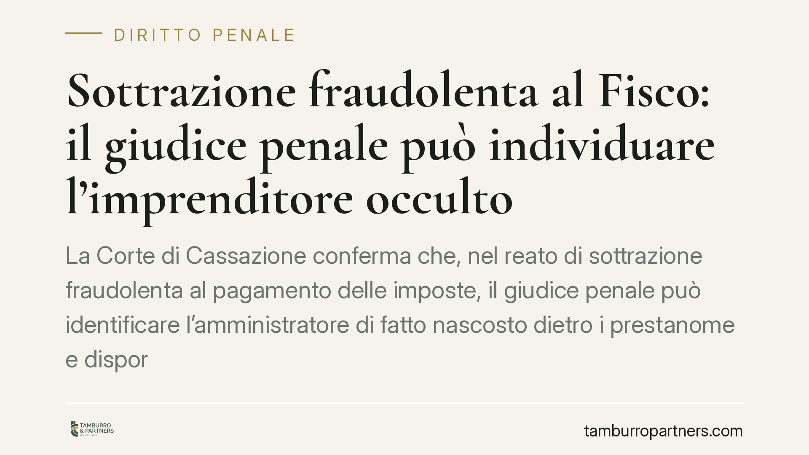

Sottrazione fraudolenta al Fisco: il giudice penale può individuare l'imprenditore occulto
La Corte di Cassazione conferma che, nel reato di sottrazione fraudolenta al pagamento delle imposte, il giudice penale può identificare l'amministratore di fatto nascosto dietro i prestanome e disporre sequestri anche senza un previo accertamento formale dell'Agenzia delle Entrate. Un'indicazione che restringe gli spazi degli schemi societari 'apri e chiudi'.

Il caso e il principio affermato
La Cassazione è tornata sul reato previsto dall'articolo 11 del D.lgs. 74/2000, che punisce chi, per sottrarsi al pagamento di imposte, interessi o sanzioni, compie atti fraudolenti sui propri beni idonei a rendere inefficace la riscossione coattiva.
Il punto centrale della decisione riguarda due profili. Primo: il giudice penale può individuare autonomamente l'amministratore di fatto, cioè chi gestisce realmente l'impresa dietro lo schermo di un prestanome formalmente intestatario della carica. Secondo: non serve attendere un accertamento tributario definitivo per contestare il reato e disporre il sequestro. Non esiste, in altri termini, una "pregiudiziale tributaria" che vincoli il processo penale.
Inquadramento normativo
L'articolo 11 del D.lgs. 74/2000 configura un reato di pericolo. Non richiede che la riscossione sia effettivamente fallita: è sufficiente che gli atti compiuti sui beni siano idonei a rendere in tutto o in parte inefficace la procedura di recupero del credito erariale. Questo spostamento sul piano del pericolo è la ragione per cui non occorre un accertamento fiscale già concluso.
Sul versante soggettivo, la giurisprudenza equipara da tempo l'amministratore di fatto a quello di diritto. Il riferimento è all'articolo 2639 del Codice civile, che riconosce responsabilità a chi esercita in modo continuativo e significativo i poteri tipici della carica, a prescindere dall'intestazione formale. Il giudice penale, quindi, guarda alla sostanza della gestione, non all'etichetta risultante dalla visura camerale.
Quanto al sequestro, lo strumento è quello preventivo (articolo 321 del Codice di procedura penale), anche nella forma finalizzata alla confisca. Può colpire i beni oggetto degli atti fraudolenti o il profitto del reato, pure quando sono formalmente intestati a terzi che fungono da schermo.
Implicazioni pratiche
La pronuncia incide direttamente sulla diffusa prassi delle società "apri e chiudi": soggetti costituiti, svuotati di asset e lasciati morire con i debiti fiscali, mentre l'attività prosegue sotto una nuova veste societaria.
Per chi gestisce di fatto l'impresa, il messaggio è netto: l'uso di un prestanome non offre protezione. Il giudice può ricostruire l'effettivo centro decisionale attraverso elementi concreti — rapporti con fornitori e banche, firma di contratti, gestione del personale, movimentazione dei conti — e attribuire la responsabilità penale a chi comanda realmente.
Si espone anche il terzo interessato, cioè chi ha ricevuto i beni oggetto dello spoglio patrimoniale. Il sequestro può raggiungerlo se l'operazione risulta funzionale a sottrarre garanzie al Fisco. Chi acquista o riceve beni da società in crisi fiscale deve quindi valutare con attenzione la provenienza e la causa dell'atto.
Infine, cade l'illusione di guadagnare tempo contestando prima la pretesa tributaria. L'indagine penale e il sequestro possono partire a prescindere dall'esito del contenzioso con l'Agenzia delle Entrate.
Cosa fare in concreto
- Verificate la coerenza tra ruolo formale e gestione reale. Se un soggetto compare come amministratore di diritto ma non esercita alcun potere effettivo, lo schema è esposto a contestazioni.
- Documentate le operazioni straordinarie sui beni aziendali. Cessioni, scissioni e trasferimenti di patrimonio devono avere una causa economica reale e verificabile, non il solo effetto di ridurre la garanzia verso l'Erario.
- Valutate con prudenza gli acquisti da imprese in difficoltà fiscale. Chi riceve beni può subire il sequestro: una due diligence sulla posizione debitoria del cedente riduce il rischio.
- Non confidate nella pregiudiziale tributaria. Il procedimento penale segue tempi e logiche proprie: la difesa va impostata subito, senza attendere la definizione del contenzioso fiscale.
- Consigliamo un controllo preventivo degli assetti societari quando vi siano esposizioni vero il Fisco significative o riorganizzazioni in corso.
---
*Contributo informativo a cura di Tamburro & Partners - Avv. Giuseppe Tamburro. Non costituisce parere legale.*
Ogni condominio ha una storia a sé.
Se gestisci un'amministrazione e vuoi un confronto su una specifica questione condominiale, scrivi allo studio. Ti rispondiamo entro un giorno lavorativo.